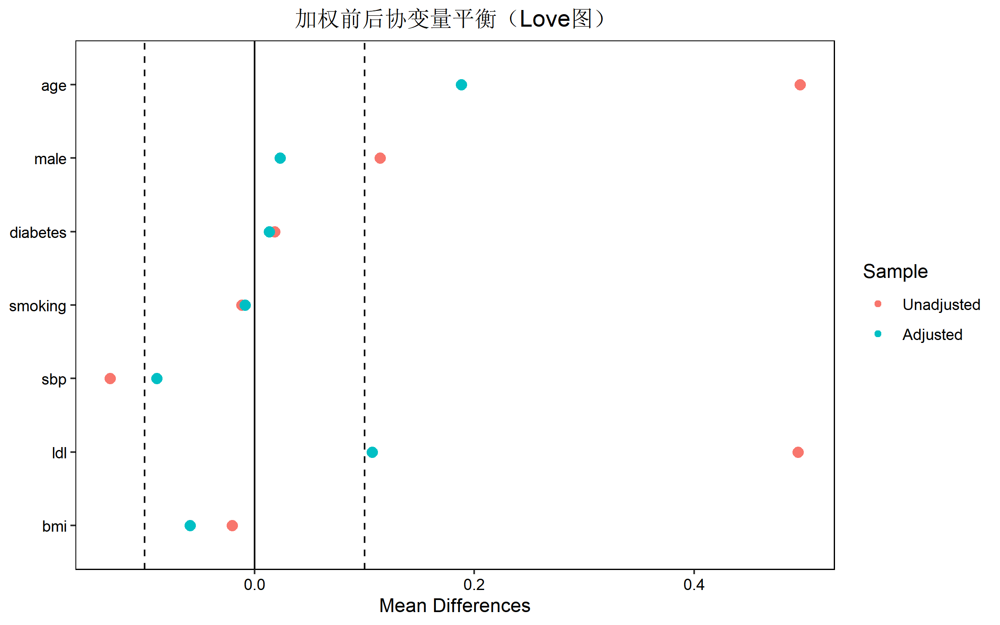
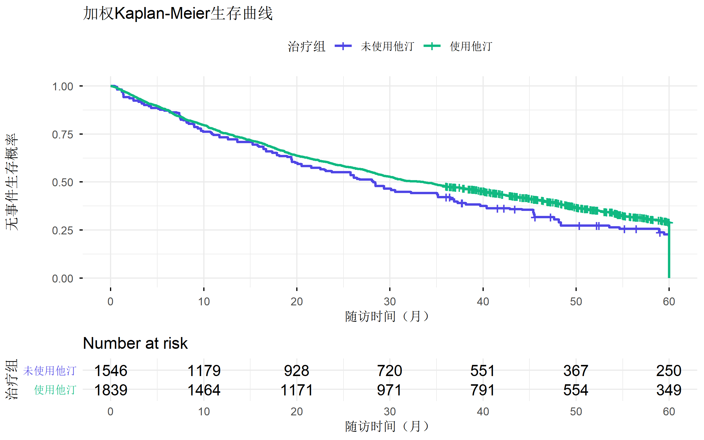
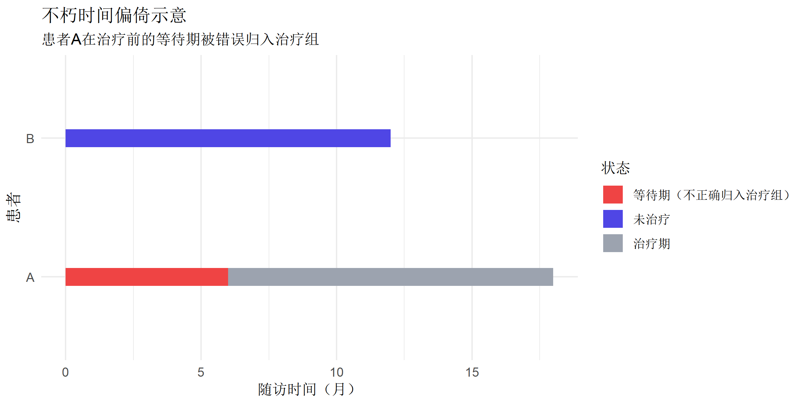

# 加载必要的包
library(tidyverse)
library(survival)
library(survminer)
library(broom)
library(tableone)
library(WeightIt)
library(cobalt)目标试验模拟 (Target Trial Emulation)
R语言方法
因果推断
观察性研究
使用观察性数据模拟随机对照试验，遵循TARGET报告指南进行严谨的因果推断。
什么是目标试验模拟
目标试验模拟（Target Trial Emulation, TTE） 是一种利用观察性数据来模拟假想的随机对照试验（RCT）的方法框架。其核心思想是：
在分析观察性数据之前，首先明确描述一个理想的RCT（目标试验），然后使用观察数据尽可能地模拟这个试验。
为什么需要目标试验模拟
| 传统观察性研究 | 目标试验模拟 |
|---|---|
| 容易产生时间相关偏倚 | 明确定义时间零点 |
| 选择偏倚难以识别 | 清晰的入组标准 |
| 因果解释模糊 | 明确的因果问题 |
| 报告不规范 | 遵循TARGET指南 |
2025年JAMA发布了TARGET报告指南，包含21条报告清单，推动了目标试验模拟的标准化。
安装与加载
目标试验协议的7个组成部分
一个完整的目标试验协议包含以下7个部分：
| 组成部分 | 说明 | 模拟策略 |
|---|---|---|
| 1. 入组标准 (Eligibility) | 谁可以入组试验？ | 使用观察数据中符合条件的患者 |
| 2. 治疗策略 (Treatment) | 比较哪些治疗方案？ | 基于实际治疗记录定义 |
| 3. 分配策略 (Assignment) | 如何分配到治疗组？ | 使用统计方法调整混杂 |
| 4. 随访起点 (Time zero) | 何时开始随访（基线）？ | 治疗开始时作为时间零点 |
| 5. 结局 (Outcome) | 主要和次要结局是什么？ | 从电子健康记录提取 |
| 6. 因果对比 (Causal contrast) | ITT还是Per-protocol效应？ | 调整依从性偏离 |
| 7. 分析计划 (Analysis) | 统计分析方法 | IPW、克隆-审查-加权等 |
案例研究：他汀类药物与心血管事件
研究问题
在有高血压的成年人中，启动他汀治疗与不使用他汀相比，是否降低5年内心血管事件风险？
步骤1：定义目标试验协议
| 组成部分 | 目标试验 | 模拟方案 |
|---|---|---|
| 入组标准 | 40-75岁；有高血压；无CVD史；未使用他汀 | 选择符合条件的电子健康记录 |
| 治疗策略 | 策略A：启动他汀并持续使用 | |
| 策略B：不使用他汀 | 基于处方记录定义 | |
| 分配策略 | 随机分配 | IPW调整混杂 |
| 随访起点 | 随机化当天 | 首次满足入组标准的日期 |
| 结局 | 首次CVD事件或心血管死亡 | 诊断代码识别CVD事件 |
| 因果对比 | ITT效应 | 使用IPW估计ITT效应 |
| 分析计划 | Kaplan-Meier + Cox回归 | 加权Cox回归 |
模拟数据准备
# 模拟观察性队列数据
set.seed(2024)
n <- 2000
# 基线协变量
data_obs <- tibble(
id = 1:n,
age = round(rnorm(n, 55, 10)),
male = rbinom(n, 1, 0.45),
diabetes = rbinom(n, 1, 0.25),
smoking = rbinom(n, 1, 0.30),
sbp = round(rnorm(n, 145, 15)),
ldl = round(rnorm(n, 140, 30)),
bmi = round(rnorm(n, 27, 5), 1)
) %>%
# 限制年龄范围
filter(age >= 40, age <= 75)
# 治疗分配（基于协变量的选择偏倚）
data_obs <- data_obs %>%
mutate(
# 治疗倾向（高风险更可能使用他汀）
ps_logit = -3 + 0.05 * age + 0.3 * diabetes + 0.2 * smoking +
0.02 * ldl + 0.5 * male,
ps = plogis(ps_logit),
statin = rbinom(n(), 1, ps)
)
# 生成结局
data_obs <- data_obs %>%
mutate(
# 事件风险
risk_logit = -5 + 0.05 * age + 0.8 * diabetes + 0.6 * smoking +
0.02 * sbp + 0.01 * ldl - 0.4 * statin,
event_prob = plogis(risk_logit),
event = rbinom(n(), 1, event_prob),
# 随访时间
time = ifelse(event == 1,
rexp(n(), rate = 0.3) * 12, # 事件时间
runif(n(), 36, 60)
), # 删失时间
time = pmin(time, 60) # 最长5年
) %>%
select(-ps_logit, -risk_logit, -event_prob, -ps)
head(data_obs)# A tibble: 6 × 11
id age male diabetes smoking sbp ldl bmi statin event time
<int> <dbl> <int> <int> <int> <dbl> <dbl> <dbl> <int> <int> <dbl>
1 1 65 1 0 1 155 137 23.8 1 0 43.2
2 2 60 0 0 1 146 116 30.9 1 1 0.911
3 3 54 0 0 0 126 170 32 1 1 16.5
4 4 53 0 0 0 150 163 26.7 1 1 37.9
5 5 67 0 0 0 150 122 27.3 1 1 37.2
6 6 68 0 0 1 152 120 17.8 1 1 24.4 步骤2：检查入组标准
# 基线特征表
baseline_vars <- c("age", "male", "diabetes", "smoking", "sbp", "ldl", "bmi")
table1 <- CreateTableOne(
vars = baseline_vars,
strata = "statin",
data = data_obs,
test = TRUE
)
print(table1, smd = TRUE) Stratified by statin
0 1 p test SMD
n 126 1713
age (mean (SD)) 52.29 (7.00) 56.04 (8.08) <0.001 0.496
male (mean (SD)) 0.34 (0.48) 0.46 (0.50) 0.013 0.234
diabetes (mean (SD)) 0.22 (0.42) 0.24 (0.43) 0.643 0.043
smoking (mean (SD)) 0.31 (0.46) 0.30 (0.46) 0.780 0.026
sbp (mean (SD)) 146.66 (16.15) 144.62 (14.76) 0.137 0.132
ldl (mean (SD)) 125.55 (30.05) 140.48 (30.34) <0.001 0.495
bmi (mean (SD)) 27.08 (5.24) 26.98 (5.03) 0.822 0.020观察：治疗组和对照组存在基线差异（SMD > 0.1），说明存在选择偏倚，需要调整。
步骤3：倾向评分加权
估计倾向评分
# 拟合倾向评分模型
ps_model <- glm(
statin ~ age + male + diabetes + smoking + sbp + ldl + bmi,
data = data_obs,
family = binomial
)
# 计算倾向评分和权重
data_obs <- data_obs %>%
mutate(
ps = predict(ps_model, type = "response"),
# ATE权重
ipw = ifelse(statin == 1, 1 / ps, 1 / (1 - ps)),
# 截断极端权重
ipw_truncated = pmin(pmax(ipw, quantile(ipw, 0.01)), quantile(ipw, 0.99))
)检验协变量平衡
# 使用WeightIt检验平衡
bal_tab <- bal.tab(
statin ~ age + male + diabetes + smoking + sbp + ldl + bmi,
data = data_obs,
weights = data_obs$ipw_truncated,
method = "weighting"
)
print(bal_tab)Balance Measures
Type Diff.Adj
age Contin. 0.1881
male Binary 0.0230
diabetes Binary 0.0132
smoking Binary -0.0089
sbp Contin. -0.0893
ldl Contin. 0.1068
bmi Contin. -0.0589
Effective sample sizes
Control Treated
Unadjusted 126. 1713.
Adjusted 101.25 1707.42# 可视化平衡
love.plot(
statin ~ age + male + diabetes + smoking + sbp + ldl + bmi,
data = data_obs,
weights = data_obs$ipw_truncated,
threshold = 0.1
) +
labs(title = "加权前后协变量平衡（Love图）")
步骤4：加权生存分析
Kaplan-Meier曲线
# 创建生存对象
data_obs$surv_obj <- Surv(data_obs$time, data_obs$event)
# 加权KM曲线（使用survey包更准确，这里简化演示）
km_fit <- survfit(
surv_obj ~ statin,
data = data_obs,
weights = ipw_truncated
)
# 绘制生存曲线
ggsurvplot(
km_fit,
data = data_obs,
palette = c("#4f46e5", "#10b981"),
risk.table = TRUE,
xlab = "随访时间（月）",
ylab = "无事件生存概率",
legend.labs = c("未使用他汀", "使用他汀"),
legend.title = "治疗组",
title = "加权Kaplan-Meier生存曲线",
ggtheme = theme_minimal()
)
加权Cox回归
# 加权Cox回归
cox_weighted <- coxph(
surv_obj ~ statin,
data = data_obs,
weights = ipw_truncated,
robust = TRUE # 稳健标准误
)
# 结果摘要
tidy(cox_weighted, conf.int = TRUE, exponentiate = TRUE)# A tibble: 1 × 8
term estimate std.error robust.se statistic p.value conf.low conf.high
<chr> <dbl> <dbl> <dbl> <dbl> <dbl> <dbl> <dbl>
1 statin 0.871 0.0366 0.0950 -1.45 0.147 0.723 1.05结果解读
hr <- exp(coef(cox_weighted))
ci <- exp(confint(cox_weighted))
cat(sprintf(
"使用他汀与不使用相比，心血管事件的风险比为 %.2f (95%% CI: %.2f-%.2f)\n",
hr, ci[1], ci[2]
))使用他汀与不使用相比，心血管事件的风险比为 0.87 (95% CI: 0.72-1.05)处理时间相关偏倚
不朽时间偏倚
不朽时间偏倚（Immortal Time Bias） 是目标试验模拟中最常见的偏倚：

使用克隆-审查-加权法
# 克隆-审查-加权法伪代码
# 1. 克隆：每个符合条件的患者复制两份
cloned_data <- bind_rows(
data_obs %>% mutate(assigned = 0), # 分配到未治疗组
data_obs %>% mutate(assigned = 1) # 分配到治疗组
)
# 2. 审查：当实际治疗与分配不符时审查
cloned_data <- cloned_data %>%
mutate(
# 如果分配到治疗组但实际未治疗，在治疗时间审查
# 如果分配到未治疗组但实际接受治疗，在治疗时间审查
artificial_censoring = case_when(
assigned == 1 & statin == 0 ~ TRUE,
assigned == 0 & statin == 1 ~ TRUE,
TRUE ~ FALSE
)
)
# 3. 加权：使用IPCW校正人为审查TARGET报告清单
2025年JAMA发布的TARGET指南包含21条报告项目：
| 类别 | 条目 |
|---|---|
| 标题与摘要 | 1. 标题表明使用目标试验框架 |
| 标题与摘要 | 2. 摘要描述目标试验和模拟方法 |
| 引言 | 3. 说明研究问题和理由 |
| 引言 | 4. 说明为何使用观察数据 |
| 方法 | 5. 描述目标试验协议 |
| 方法 | 6. 描述数据来源 |
| 方法 | 7. 描述入组标准的操作化定义 |
| 方法 | 8. 描述治疗策略的定义 |
| 方法 | 9. 描述时间零点的确定 |
| 方法 | 10. 描述结局的测量 |
| 方法 | 11. 描述随访方式 |
| 方法 | 12. 描述因果对比 |
| 方法 | 13. 描述统计分析方法 |
| 方法 | 14. 描述敏感性分析 |
| 结果 | 15. 报告符合入组标准的人数 |
| 结果 | 16. 报告基线特征 |
| 结果 | 17. 报告主要分析结果 |
| 结果 | 18. 报告敏感性分析结果 |
| 讨论 | 19. 讨论目标试验与模拟的差异 |
| 讨论 | 20. 讨论结果的因果解释 |
| 讨论 | 21. 讨论局限性和未来方向 |
完整分析流程
第1步：定义并记录目标试验
# 记录目标试验协议
protocol_doc <- "
## 目标试验协议
### 入组标准
- 年龄40-75岁
- 诊断高血压
- 无心血管疾病史
- 过去12个月未使用他汀
### 治疗策略
- 策略A：启动他汀治疗
- 策略B：不启动他汀治疗
### 分配策略
- 随机分配（1:1）
### 随访起点
- 随机化日期
### 结局
- 主要结局：首次主要不良心血管事件（MACE）
- 随访时间：5年
### 因果对比
- 意向性治疗（ITT）效应
### 分析计划
- IPW调整混杂
- Cox比例风险回归
- 敏感性分析：E值、不同权重截断点
"
cat(protocol_doc)
## 目标试验协议
### 入组标准
- 年龄40-75岁
- 诊断高血压
- 无心血管疾病史
- 过去12个月未使用他汀
### 治疗策略
- 策略A：启动他汀治疗
- 策略B：不启动他汀治疗
### 分配策略
- 随机分配（1:1）
### 随访起点
- 随机化日期
### 结局
- 主要结局：首次主要不良心血管事件（MACE）
- 随访时间：5年
### 因果对比
- 意向性治疗（ITT）效应
### 分析计划
- IPW调整混杂
- Cox比例风险回归
- 敏感性分析：E值、不同权重截断点第2步：选择符合条件的观察数据
第3步：倾向评分加权
第4步：加权Cox回归
第5步：敏感性分析
# E值敏感性分析
library(EValue)
hr_result <- exp(coef(cox_weighted))
evalue(est = HR(hr_result, rare = TRUE)) point lower upper
RR 0.8714156 NA NA
E-values 1.5590572 NA NA总结
| 步骤 | 关键点 |
|---|---|
| 1. 定义目标试验 | 明确7个协议组成部分 |
| 2. 识别数据源 | 评估数据能否模拟目标试验 |
| 3. 操作化定义 | 将协议转化为可测量的变量 |
| 4. 处理偏倚 | 使用IPW、克隆-审查-加权等方法 |
| 5. 分析与报告 | 遵循TARGET指南 |
推荐资源
- Hernán MA, Robins JM. Using Big Data to Emulate a Target Trial
- TARGET Reporting Guideline (2025)
- CAUSALab Harvard
- Hernán & Robins《Causal Inference: What If》